มาถึงบทความสำคัญที่สุด สำหรับการวาดรูปเลยก็ได้ กับคำถามที่ว่า
บางคน….ฝึกวาดรูป มาตั้งแต่เด็ก แต่ฝีมือก็ยังห่วยไม่เอาไหนเหมือนเดิม
บางคน….ฝึกวาดรูป มาหลายสิบปี จนในที่สุดก็ได้สิ่งที่ตัวเองอยากได้มาครอง
บางคน….ฝึกวาดรูป มาแค่ 1 ปี แต่ก็สามารถทับเทียบกับระดับโปรได้
อะไรคือความต่าง? ที่ทำให้พวกเขาเก่งขึ้นได้ ในเวลาที่ต่างกัน หรือว่ามันจะเป็นสิ่งที่เรียกว่า พรสวรรค์ กันแน่นะ
ผมขอตอบเลยครับ ว่า ไม่มีคำว่า พรสวรรค์ ในการวาดรูป (ในการเป็น creator)
ทุกอย่างล้วนมาจาก พรแสวง...การลงมือทำทั้งนั้น วันนี้ผมจะมาสอนเกี่ยวกับ วิธีการวาดที่ผมได้เรียนมาครับ
วาดรูปยังไงให้เก่ง?
ตอบ กำหนดจุดเริ่มต้น และ เป้าหมาย และ วิ่ง!
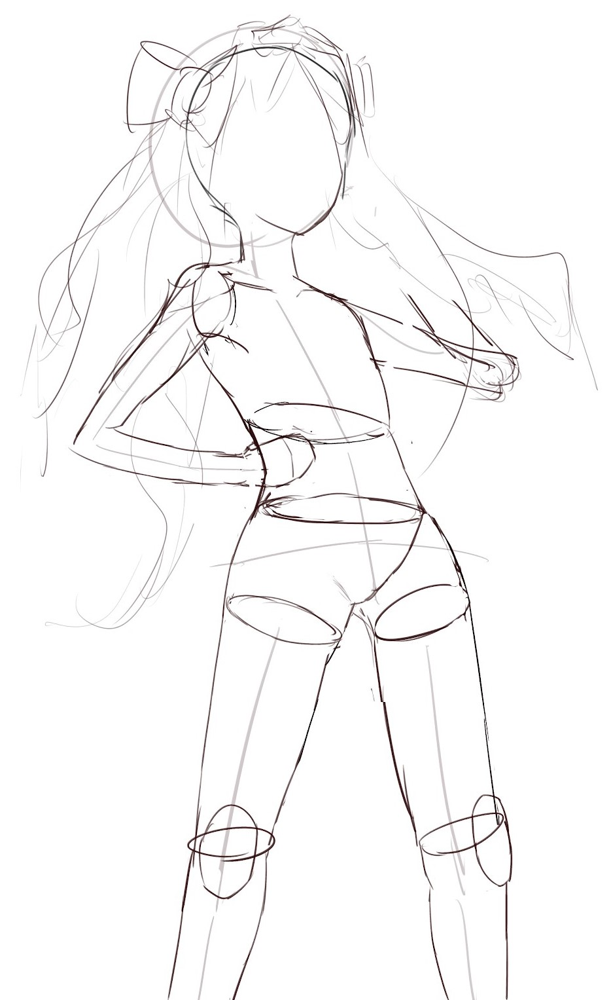
ก่อนอื่นต้องเข้าใจว่า "เก่ง" ของเราคืออะไร "เก่ง" ของเราคือ "สวย" หรือเปล่าครับ
งั้น ภาพแบบไหนคือ ภาพที่ "สวย" ล่ะ อธิบายได้หรือป่าว….อธิบายยากใช่ไหม
งั้นเราลองหาภาพที่เขาวาด แล้วเราคิดว่ามันสวยขึ้นมาครับ แล้วลองวาดตามดูครับ
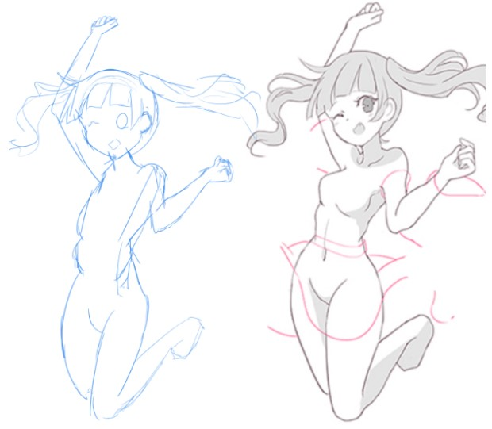
เป็นไงครับ ห่วยแตกใช่ไหมครับ แต่นี่ การกระทำอย่างงี้ ทำให้เราได้ข้อมูลมา 2 อย่างที่สำคัญคือ
1. ฝืมือของเราตอนนี้
2. เป้าหมายของ”ภาพสวย” ที่เราคิดว่าเราสวย
เมื่อเราได้ 2 อย่าง จุดเริ่มต้น กับ เป้าหมาย ของเราแล้ว ที่เหลือก็คือ วิธีที่จะไปให้ถึงเป้าหมายครับ
วิธีไปให้ถึงเป้าหมาย?
ตอบ เกิดจาก 4 อย่าง ที่ทำต่อกัน คือ สังเกต ตั้งสมุติฐาน ปฏิบัติ วิเคราะห์
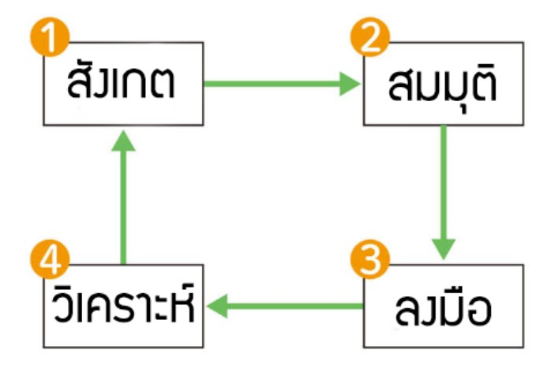
1. สังเกต การสังเกต คือ การพิจารณาภาพ ว่าเราเห็นอะไรจากภาพ ที่เป็นข้อมูลที่เราไม่เคยรู้ แล้วจำมันไว้
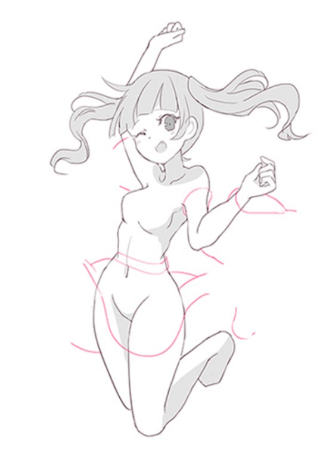
ยกตัวอย่างเช่นภาพนี้ เราเห็นว่า เป็นภาพผู้หญิงที่กระโดดอยู่ จากในภาพเราสังเกตได้ว่า
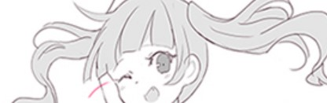
เมื่อคนกระโดด ผมจะลอยขึ้น
เมื่อเราบีบใหล่ทำให้หัวไหล์จะหยักขึ้น
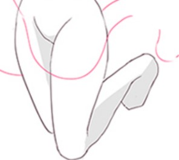
ขาหุบไปด้านหลัง เมื่อกระโดเต็มตัว
เมื่อยู่มุมด้านข้าง ปากจะไม่อยู่ตรงกลางหรืออาจจะแม้กระทั่งเรื่องอย่างงี้ก็เป็นได้
รูปนี้ในการวาดในแต่ละเส้น เส้นจะไม่ขาด และมีการใส่น้ำหนักลงไปในเส้นแต่ละส่วน
2. สมมุติ คือ การตั้งสมมุติฐาน นำข้อมูลที่เราได้มาจากการสังเกต มาคิดว่าทำไมถึงต้องทำเช่นนี้ หรือรวมไปแม้กระทั่ง การวาดในแต่ละเส้นด้วยก็ได้เช่น
การให้ตัวละคร โดดโลเเต้นเต็มที่ ให้ชูมือขึ้น และหลับตาข้างนึง
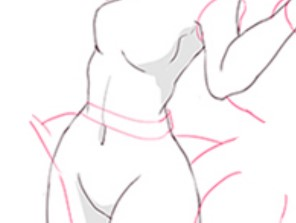
การที่โชว์มุมนี้ ตั้งใจจะโชว์เอวที่คอด
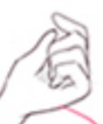
มือกำไม่สนิท
ในช่วง สังเกต กับสมมุติ เราสามารถทำไปพร้อมๆกันได้
3. ลงมือ การลงมือคือการลงมือวาด ก็ให้วาดเลย! วาดให้มันเสร็จนะ!
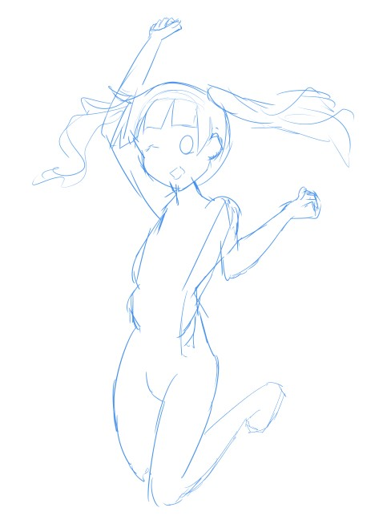
4. วิเคราะห์ คือ การหาข้อดี และ ข้อเสียของภาพตัวเองออกมา ดูว่ามันไม่สวยตรงไหน และคิดหาวิธีแก้ครับ อย่างเช่น
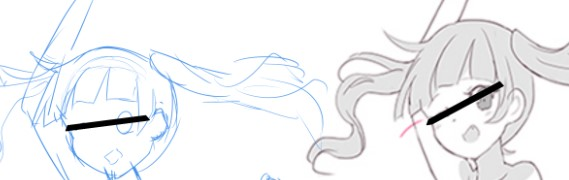
องศาของหน้ามันแปลกไป เราควรจะเริ่มร่างจากโครงของภาพก่อน
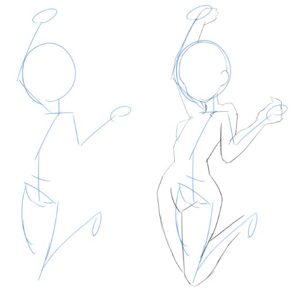
แล้วค่อยเพิ่มรายละเอียดไปทีละนิด
หรือถ้าเราไม่รู้จริงๆ ว่าเราผิดตรงไหน ผมแนะนำให้เอาภาพไปทาบเลยครับ
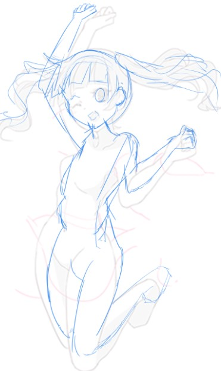
สำหรับมือใหม่ ผมไม่แนะนำให้ยกตัวอย่างแค่ข้อเสียของตัวเองอย่างเดียว ให้ยกข้อดีของตัวเองมาด้วย
และไม่ยกข้อที่จะแก้มาเกิน 3 ข้อ ครับ เพราะมันจะทำให้เราหดหู่ ไม่อยากวาดต่อครับ
ผมคิดว่า มันไม่อะไรที่สามารถสำเร็จได้ในครั้งแรกที่เราทำ เพราะงั้นไม่ต้องตกใจครับ ที่รูปตัวเอง
วาดออกมาไม่สวย
ถ้าเราลองทำวิธีที่ผมทำ ผมรับรองว่าเราต้องเห็นผลที่เปลี่ยนแปลงภายใน 3 ครั้งที่เราวาดแน่นอนครับ
เมื่อเรามองงานเก่าๆของเรา เราจะเห็นว่ามันสวยขึ้นครับ
สำหรับพาร์ทต่อไป ผมจะมาอธิบายเกี่ยวกับ การวาดรูปมันก็เหมือนกับการเป็นจอมเวทย์นะครับ
ฝากติดตามด้วยครับ